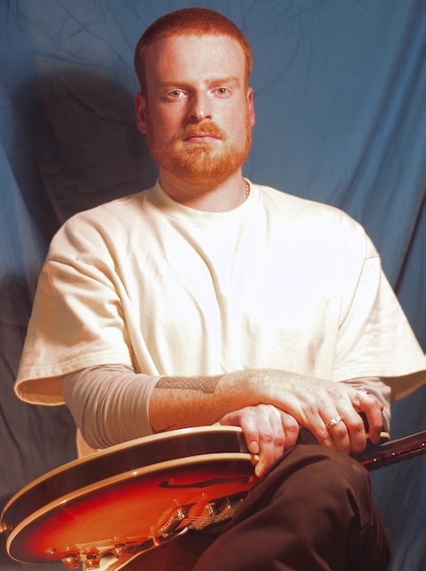

Mitch Dwyer
Mitch Dwyer is a guitarist and producer originally from Christchurch, New Zealand, and is currently based in Melbourne, Australia. He has released music under the pseudonyms 'Mitch Zachry' and 'SPACE FOE,' and has also recorded and performed with artists including Jack Page and Darren Pickering (Small Worlds).
Mitch holds a Bachelor of Music Arts from the Ara Institute of Canterbury and was a finalist for the 2024 APRA 'Best Jazz Composition' Award."
Listen to Mitch:
Watch Mitch:
Contact:
mitchdwyermusic@gmail.com
Phone
0410 305 893